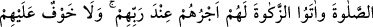
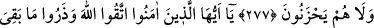
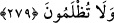

RİBÂ (FÂİZ)
275. Faiz yiyenler (kabirlerinden), şeytan çarpmış kimselerin cinnet nöbetinden
kalktığı gibi kalkarlar. Bu hal onların “Alım-satım tıpkı faiz gibidir” demeleri
yüzündendir. Halbuki Allah, alım-satımı helâl, faizi haram kılmıştır. Bundan sonra
kime Rabbinden bir öğüt gelir de faizden vazgeçerse, geçmişte olan kendisinindir
ve artık onun işi Allah’a kalmıştır. Kim tekrar faize dönerse, işte onlar
cehennemliktir, orada devamlı kalırlar.
276. Allah faizi tüketir (faiz karışan malın bereketini giderir), sadakaları ise
bereketlendirir. Allah küfürde ve günahta ısrar eden hiç kimseyi sevmez.
277. İman edip iyi işler yapan, namaz kılan ve zekât verenler var ya, onların
mükâfatları Rableri katındadır. Onlara korku yoktur, onlar üzüntü de çekmezler.
278. Ey iman edenler! Allah’tan korkun. Eğer gerçekten inanıyorsanız mevcut
faiz alacaklarınızı terkedin.
279. Şayet (faiz hakkında söylenenleri) yapmazsanız, Allah ve Resûlü tarafından
(faizcilere karşı) açılan savaştan haberiniz olsun. Eğer tevbe edip vazgeçerseniz,
sermayeniz sizindir; ne haksızlık etmiş ne de haksızlığa uğramış olursunuz.
“Faiz almak” yerine “faiz yemek” ifâdesi kullanılmıştır. Çünkü “mal”dan çoğu kez
kasdolunan yenecek şeylerdir (yemektir). Ayrıca fâiz daha çok yiyecek maddesi
husûsunda şuyû bulmuştur.